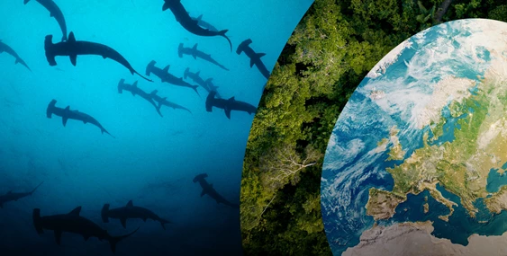

BE THE ONE WITH NATURE
WWF is op een missie: We gaan onze wereld 'Nature positive' maken. Van natuurverlies naar natuurwinst, zo snel mogelijk. Zo blijft de aarde leefbaar voor iedereen. Het kan, als we er samen voor kiezen.
Meer natuur, vandaag nog
Natuurverlies en klimaatverandering raken vandaag ál het leven op aarde. Niet in de laatste plaats onszelf. Om dit te stoppen hoor je vooral wat minder moet. Minder consumeren. Minder CO2 uitstoten. Dat is één kant. De andere kant gaat niet over minder, maar juist over meer. Er is meer natuur nodig, vandaag nog.
Be the one with nature
Steeds meer mensen strijden mee en kiezen voor meer natuur. Met wat ze eten, kopen, stemmen en steunen. Het besef dringt door: natuur redden, is onszelf redden. We zijn onderdeel van de natuur.
Help de bossen veilig te stellen
Razendsnelle ontbossing vernietigt meer dan alleen bos. Maar het tij keert, wereldwijd. Met een nieuwe president in Brazilië, een sterke bossenwet in Europa en de beloftes van wereldleiders om bossen te beschermen worden grote stappen in de goede richting gezet. Nú is het moment om samen door te zetten.
HELP JE MEE?SLUIT JE AAN, BE THE ONE WITH NATURE
Ik kom in actie Ik wil geld doneren Ik wil meer wetenBekijk updates en acties
LIVING PLANNING REPORT: ONDERZOEK BIODIVERSITEIT
GEEF KORAAL WEER KLEUR

WERELDVRAGEN RANGERS
WIJ DOEN EN VERBINDEN. WERELDWIJD.
WWF staat midden in het veld om natuur te beschermen en herstellen. Van Limburgse rivieren tot Amazone regenwoud, van Caribisch koraal tot Afrikaanse wildlife. Met de poten in de modder: dóen is wat wij doen.

BEDREIGDE DIEREN
BOSSEN

OCEANEN
KLIMAATVERANDERING

VOEDSEL

BIODIVERSITEIT
Resultaten & updates
Diepzeemijnbouw is onnodig
MEER INFO
Bosherstel: Voor dier, natuur en mens
MEER INFO
Bosherstel: Voor dier, natuur en mens
MEER INFO